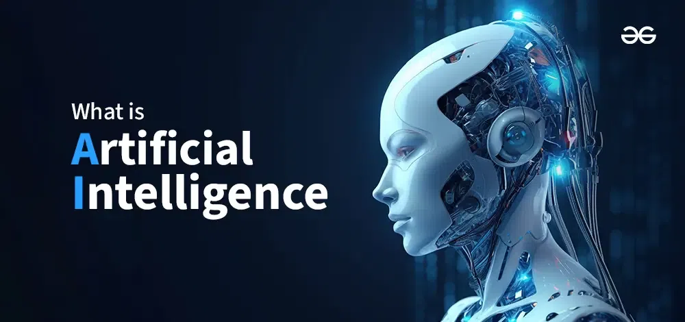
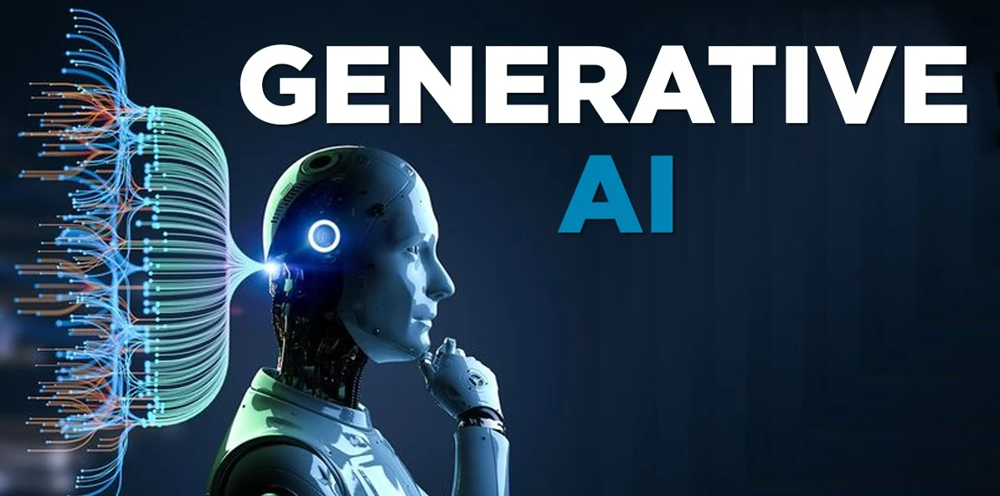

ARTIFICIAL INTELLIGENCE
Machines with human-like abilities
AI refers to machines designed to mimic human thinking, decision-making, and problem-solving skills.

MACHINE LEARNING
Learning from Data
ML enables systems to learn patterns from data and improve their performance over time without explicit programming.

DEEP LEARNING
Multi-layered Neural Brains
DL uses complex neural networks with many layers to understand intricate data like speech, images, and text.

NEURAL NETWORKS
The Brain of AI
Neural networks simulate the way human brains process information, forming the foundation of DL and ML models.

CONVOLUTIONAL NEURAL NETWORKS
AI Vision Experts
CNNs are deep learning models designed to process and classify images, powering facial recognition, object detection, and more.

GENERATIVE AI
Machines that Create
Gen-AI models like ChatGPT, DALL·E, and MidJourney create new content—text, images, and music—mimicking creativity.